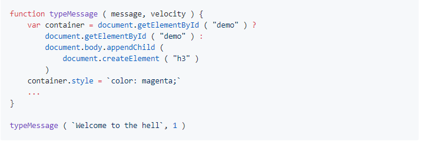
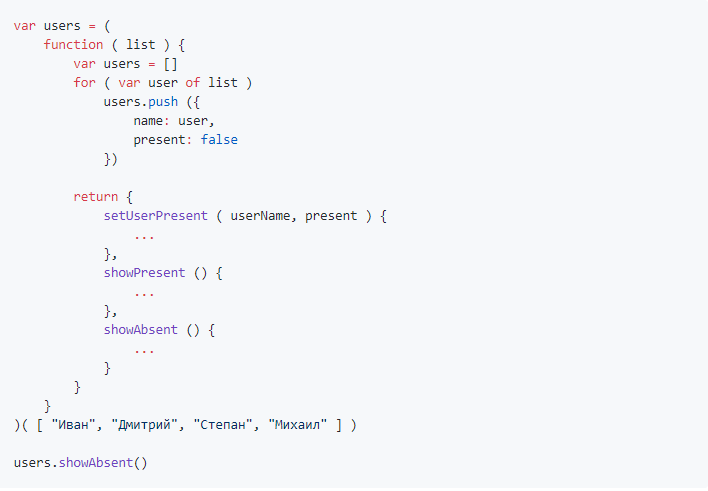
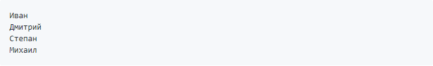
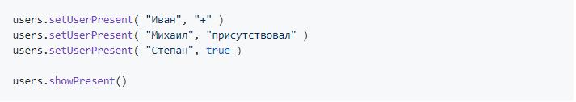
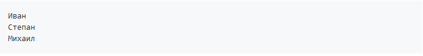
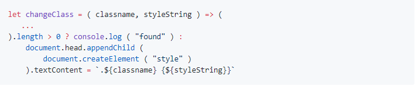
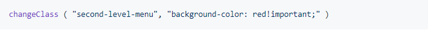

Завершите код функции typeMessage так, чтобы на страницу выводился один символ в секунду
Напилите код методов setUserPresent, showPresent и showAbsent
После запуска кода результат в консоли должен быть таким:
а после выполнения кода:
результат в консоли должен быть таким:
Допилите код функции changeClass, которая парсит все стили страницы в поисках заданного класса, а затем меняет атрибуты стиля этого класса
После вызова функции:
в консоли страницы, где есть элементы с классом second-level-menu, у всех элементов этого класса цвет фона должен измениться на красный
let changeClass = ( classname, styleString ) =>
Array.from(document.styleSheets).filter(
sheet => !sheet.href
).forEach(
sheet => Array.from(sheet.cssRules)
.filter( rule => rule.selectorText === classname
).forEach(
rule => rule.style[styleString.split(':')[0]] =
styleString.split(':')[1]
)
)
changeClass ( ".top", "background: red" )